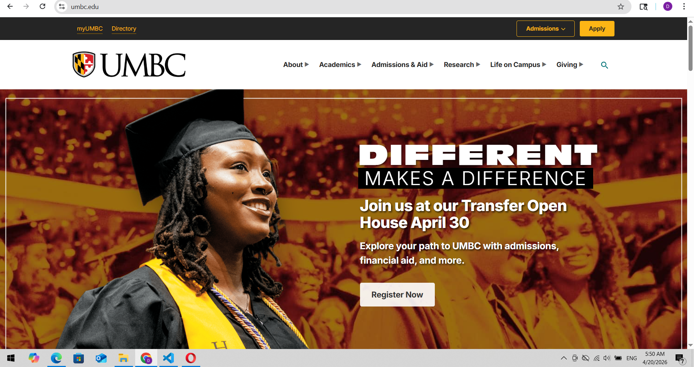

Website Information
URL: https://umbc.edu/
Name: University of Maryland, Baltimore County
Target Audience:
prospective students (high schoolers, transfer, and adult learners), current students, parents/guardians, faculty/staff, and donors
Website Screenshot

Site organization
Site is well organized. When we open the website We immediately notice a big image that approximately covers 80% of the height of the page, and there is a headline to get the audience's attention. On top of that, the image has a logo, navigation, and a search bar. Navigating is very easy: simply hover over topics such as About, Academics, Admissions & Aid, etc., and more options will be available. On top of that, the page has a couple more links: myUMBC, Directory, Admissions, Apply. If we scroll down, we will see that the page shows a good side of UMBC, and under that we see a small section with the headline "See UMBC Through Our Students' Eyes," which links to another page and shows how good it is "Through Our Students' Eyes." Below this, the website shows the ranking of UMBC, and there is also another link to a page. If we scroll down more, we will see topics "Life at UMBC" and "Featured Stories," with links to other pages for more information. After that, we will reach the end of the page with more information about UMBC, such as social media, resources, emergency info, and important contacts.
Audit Score according to the Accessibility Checker: 89%
Screenshot of audit score

Effectiveness
The website is effective because users can easily find important information like admissions, programs, and campus services. The navigation is clear and simple to use. Users can complete tasks like searching for information or applying without confusion.
Engagement
The website looks clean and professional, which is good for a university website. It is easy to read and not confusing. It shows good side of the university as well as students point of view about UMBC. It shows UMBC's ranking, featured stories and how life at this University feels like
Recommendation
One recommendation is to reduce size of the image because when users opens website they see big image but they can't see whole picture there is a small piece of image left under and in order to see whole picute users need to scroll a little bit down. In addition, in my opinion I believe if developer can make image even smaller and display it only on the left side of the page and display registration, Academics, Financial Aid and Scholarships(from navigation bar) and career center(from topic "Life at UMBC") on the right side of the page, will make the website easier to navigate, read and understand, especially for new users and future students who want to get the most useful information as quickly as possible. I would also change a little bit order I would put life at UMBC topic above the "See UMBC Through Our Students' Eyes" topic because I think as a it is more interesting to have that topic closer to top of the page rather than closer to end of page.